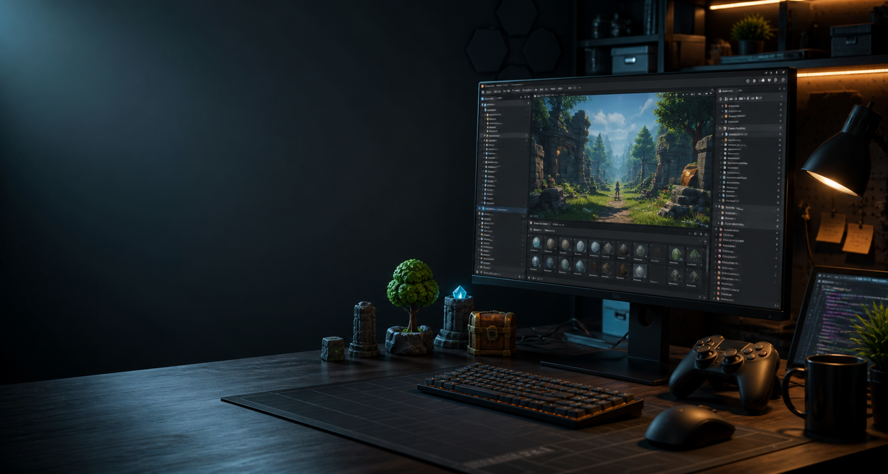

Unity Developer / C# / Gameplay
Programador de videojuegos en formacion
Creo prototipos jugables, sistemas de gameplay y mecanicas para proyectos hechos en Unity. Este portafolio reune mis avances, practicas y proyectos personales.
Perfil
Enfocado en sistemas jugables claros y mantenibles
Mi objetivo es mejorar como programador de videojuegos construyendo proyectos pequenos, terminables y faciles de probar. Trabajo con Unity y C# para practicar movimiento, camaras, interfaces, combate, interacciones, estados de juego y herramientas basicas.
Esta pagina esta pensada para crecer: cuando tengas capturas, GIFs o videos, puedes reemplazar los espacios de proyecto sin rehacer toda la estructura.
Trabajo
Proyectos destacados
Demo gameplay
Unity / C#
Guardian Cornudo
Proyecto de referencia para mostrar movimiento, combate, enemigos, interfaz y progresion basica. Cambia este texto cuando tengas la version final.
Sistema en Unity
Prototype
Sistema de combate
Espacio para explicar una mecanica concreta: ataques, vida, cooldowns, animaciones, colisiones o estados del personaje.
UI / inventario
Tools / UI
Interfaz e inventario
Espacio para mostrar sistemas de UI: menus, HUD, inventario, seleccion de objetos o guardado de datos.
Stack
Herramientas y areas de practica
Gameplay
Movimiento, camaras, combate, interacciones, enemigos y estados del jugador.
Unity
Escenas, prefabs, componentes, fisicas, UI, animaciones y organizacion de proyectos.
C#
Clases, eventos, listas, corrutinas, interfaces basicas y codigo legible.
Flujo de trabajo
Visual Studio, Git, GitHub, pruebas de prototipos y documentacion corta.
Contacto
Disponible para aprender, colaborar y mostrar avances
github.com/Sammmplay
tu-correo@example.com
Cambia este correo por el tuyo cuando quieras publicar una forma real de contacto.